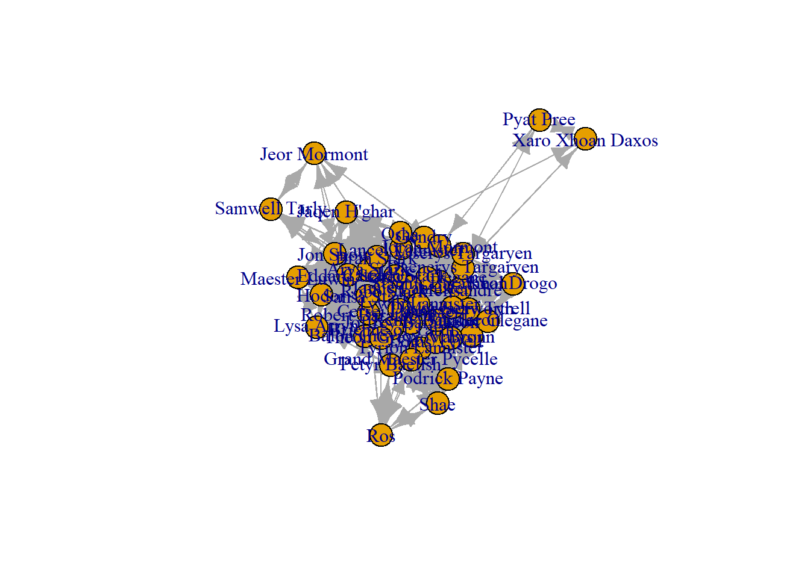

Rows: 46 Columns: 49
── Column specification ────────────────────────────────────────────────────────
Delimiter: ","
chr (3): Current house, Former house, Name
dbl (46): Lysa Arryn, Petyr Baelish, Joffrey Baratheon, Margaery Tyrell, Ren...
ℹ Use `spec()` to retrieve the full column specification for this data.
ℹ Specify the column types or set `show_col_types = FALSE` to quiet this message.
The network has 46 vertices and 1143 edges. It is unimodal, directed and weighted. I tried the commands both in igraph and statnet because initially I was getting different number of edges for the two so I wanted to check if there were any inconsistencies remaining.
The global transitivity is slightly smaller than the average local clustering coefficient. This shows on average, the density globally is comparable to the density for the local ego networks.
##Average local clustering coefficienttransitivity(like_dislike.net, type="average")
[1] 0.754549
Code
gtrans(like_dislike_statnet)
[1] 0.7184677
It can be seen that the density for Ros’ network higher in comparison to the density across the network whereas the density for Arya Stark’s and Bronn’s networks are comparable to the global and average clustering coefficients.
Since this network has negative weights, I was unable to use the commands for average path length and diameter directly. Hence, I converted the values by adding 10 to each observation to make the values positive. This made the original neutral connections equal to 10 which I changed back to 0 in order to avoid confusion regarding the distances calculated.
This network consists of a single component with 46 members.
Code
names(igraph::components(like_dislike.net))
[1] "membership" "csize" "no"
Code
#igraph::components(like_dislike.net)$membership #very long listigraph::components(like_dislike.net)$no
[1] 1
Code
igraph::components(like_dislike.net)$csize
[1] 46
There are no isolates in this network.
Code
isolates(like_dislike_statnet)
integer(0)
Plot
Code
plot(like_dislike.net)
Warning in v(graph): Non-positive edge weight found, ignoring all weights
during graph layout.

Source Code
---title: "Challenge 2 Mekhala"author: "Mekhala Kumar"description: "Describing the Basic Structure of a Network"date: "03/24/2023"format: html: toc: true code-fold: true code-copy: true code-tools: true# editor: visualcategories: - challenge_2 - Mekhala Kumar - got like_dislike ---```{r}#| label: setup#| include: falselibrary(tidyverse)library(googlesheets4)library(igraph)library(statnet)```## Reading in the data```{r}like_dislike<-read_csv("_data/got/got_like_dislike.csv")head(like_dislike)```## Converting into Network data formatIn the adjacency matrix I looked for which values had an edge to compare the number of edges reported once the network is created. ```{r}adj<-subset(like_dislike[4:49])vertex_names<-colnames(adj)row.names(adj) <- vertex_namesadj_mat <-data.matrix(adj)#diag(adj_mat) <- 0table(adj_mat !=0)#igraphlike_dislike.net <-graph_from_adjacency_matrix(adj_mat, mode ="directed", weighted =TRUE, diag =FALSE)V(like_dislike.net)$name#statnetlike_dislike_statnet <-network(adj_mat,matrix.type="adjacency", directed=TRUE, loops =FALSE)```## Describe the Network DataThe network has 46 vertices and 1143 edges. It is unimodal, directed and weighted. I tried the commands both in igraph and statnet because initially I was getting different number of edges for the two so I wanted to check if there were any inconsistencies remaining. ```{r}#igraphvcount(like_dislike.net)ecount(like_dislike.net)is_bipartite(like_dislike.net)is_directed(like_dislike.net)is_weighted(like_dislike.net)vertex_attr_names(like_dislike.net)edge_attr_names(like_dislike.net)V(like_dislike.net)$name#statnetprint(like_dislike_statnet)```## Dyad and Triad CensusThere are 554 mutual connections, 35 non-mutual connections and 446 nodes which are not connected. ```{r}igraph::dyad.census(like_dislike.net)sna::dyad.census(like_dislike_statnet)```## Triad Census```{r}igraph::triad_census(like_dislike.net)``````{r}sna::triad.census(like_dislike_statnet, mode="graph")```## Global and Local Transitivity or ClusteringThe global transitivity is slightly smaller than the average local clustering coefficient. This shows on average, the density globally is comparable to the density for the local ego networks. ```{r}#Globaltransitivity(like_dislike.net, type="global")##Average local clustering coefficienttransitivity(like_dislike.net, type="average")gtrans(like_dislike_statnet)```It can be seen that the density for Ros' network higher in comparison to the density across the network whereas the density for Arya Stark's and Bronn's networks are comparable to the global and average clustering coefficients. ```{r}#LocalV(like_dislike.net)[c("Arya Stark","Ros", "Bronn")]transitivity(like_dislike.net,type="local",vids=V(like_dislike.net)[c("Arya Stark","Ros", "Bronn")])```## Path Length, Geodesic and Component Structure I looked into the shortest paths and distances between a few of the people. ```{r}all_shortest_paths(like_dislike.net,from="Ros",to="Jon Snow", mode="out",weights=NA)$resall_shortest_paths(like_dislike.net,from="Ros",to="Jon Snow", mode="in",weights=NA)$resall_shortest_paths(like_dislike.net,from="Bronn",to="Arya Stark", mode="in",weights=NA)$resdistances(like_dislike.net,v="Bronn",to="Ros",weights=NA,algorithm="johnson")distances(like_dislike.net,v="Bronn",to="Arya Stark",weights=NA,algorithm="johnson")distances(like_dislike.net,v="Arya Stark",to="Jon Snow",weights=NA,algorithm="johnson")```## Average path lengthSince this network has negative weights, I was unable to use the commands for average path length and diameter directly. Hence, I converted the values by adding 10 to each observation to make the values positive. This made the original neutral connections equal to 10 which I changed back to 0 in order to avoid confusion regarding the distances calculated. ```{r}new_adj<-adj_mat+10new_adj[new_adj ==10] <-0like_dislike2 <-graph_from_adjacency_matrix(new_adj, mode ="directed", weighted =TRUE, diag =FALSE)average.path.length(like_dislike2,directed=T)diameter(like_dislike2)```## Component StructureThis network consists of a single component with 46 members. ```{r}names(igraph::components(like_dislike.net))#igraph::components(like_dislike.net)$membership #very long listigraph::components(like_dislike.net)$no igraph::components(like_dislike.net)$csize```There are no isolates in this network. ```{r}isolates(like_dislike_statnet)```## Plot```{r}plot(like_dislike.net)```